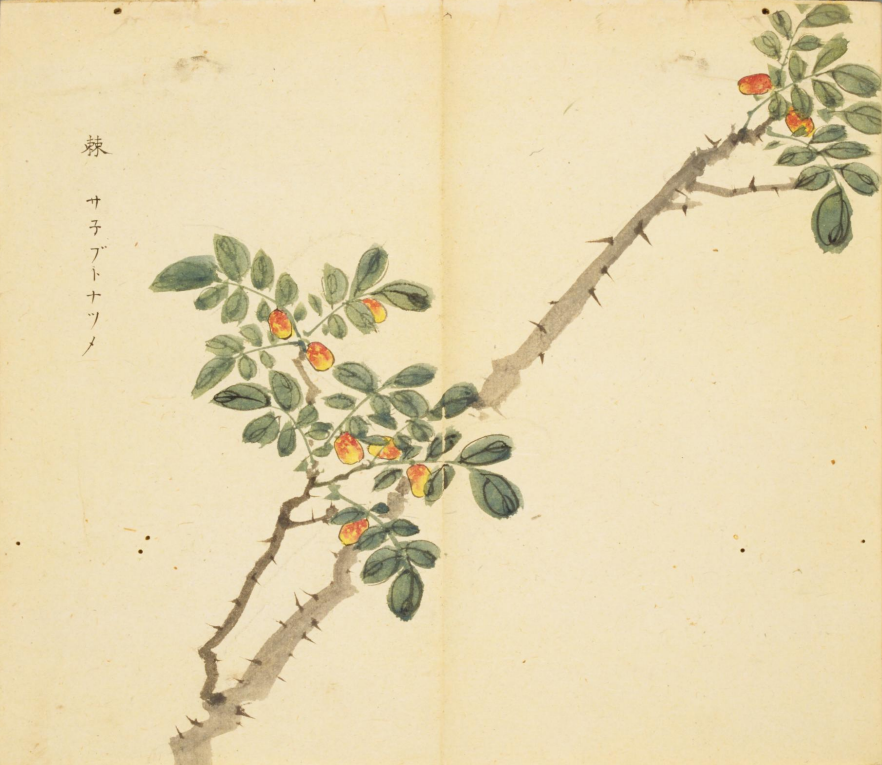
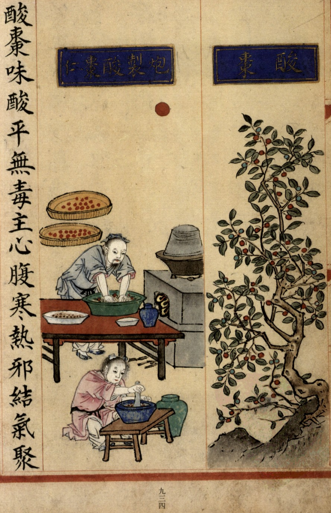
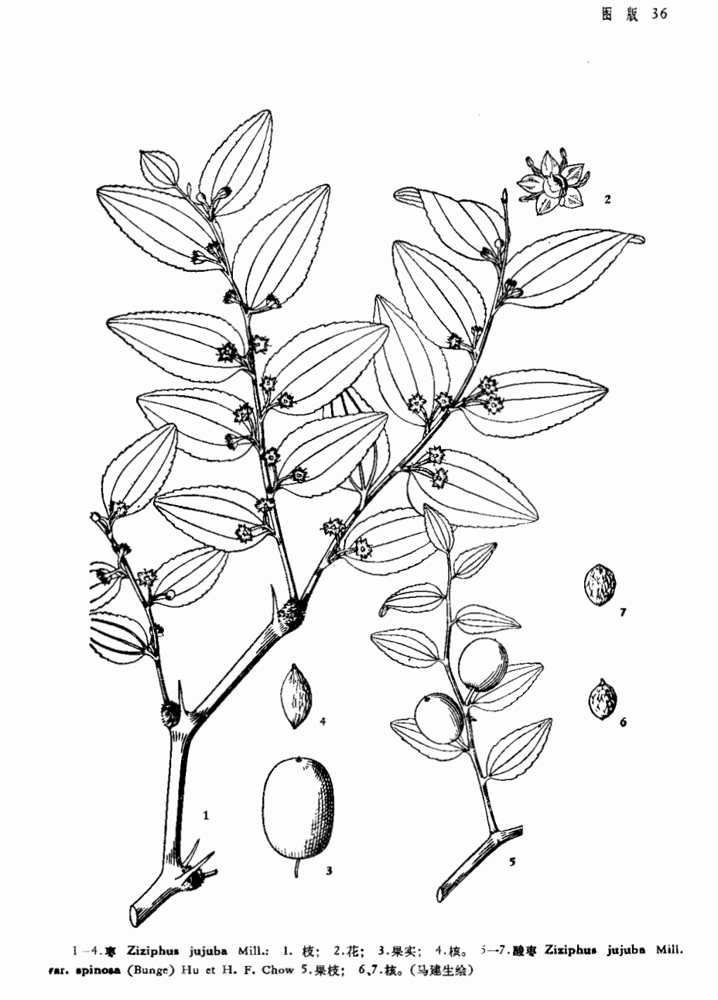

出现篇目
别名 白棘、棘刺（《别录》）、棘针（《别录》）、赤龙爪
古代记载 《毛诗故训传》
棘难长养者。（《毛传》注《凯风》） 棘，枣也。(《毛传》注《园有桃》)
《本草纲目》
"《别录》曰∶白棘生雍州川谷。棘刺花生道旁，冬至后一百二十日采之，四月采实。 当之曰∶白棘是酸枣树针。今人用天门冬苗代之，非真也。 恭曰∶棘有赤、白二种。白棘茎白如粉，子、叶与赤棘同，棘中时复有之，亦为难得。 其刺当用白者为佳。然刺有钩、直二种∶直者宜入补益，钩者宜疗疮肿。花即其花，更无别物。天门冬一名颠棘，南人以代棘针。 颂曰∶棘有赤、白二种。《切韵》云∶棘，小枣也。田野间皆有之，丛高三、二尺，花、叶、茎、实俱似枣也。 宗奭曰∶本文白棘一名棘针、棘刺，如此分明，诸家强生疑惑，今不取之。白棘，乃是肥盛紫色，枝上自有皱薄白膜先剥起者，故白棘取白之义，不过如此。"
当代记载 《中国植物志》
马甲子（ Paliurus ramosissimus），鼠李科，马甲子属植物。灌木，高达6米；小枝褐色或深褐色，被短柔毛，稀近无毛。花期5-8月，果期9-10月。产江苏、浙江、安徽、江西、湖南、湖北、福建、台湾、广东、广西、云南、贵州、四川。生于海拔2000以下的山地和平原，野生或栽培。朝鲜、日本和越南也有分布。

<细井徇>

<补遗雷公炮制便览>

<中国植物志>